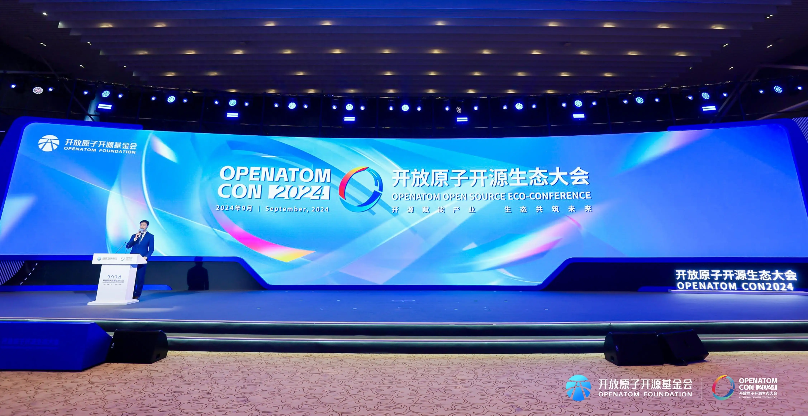
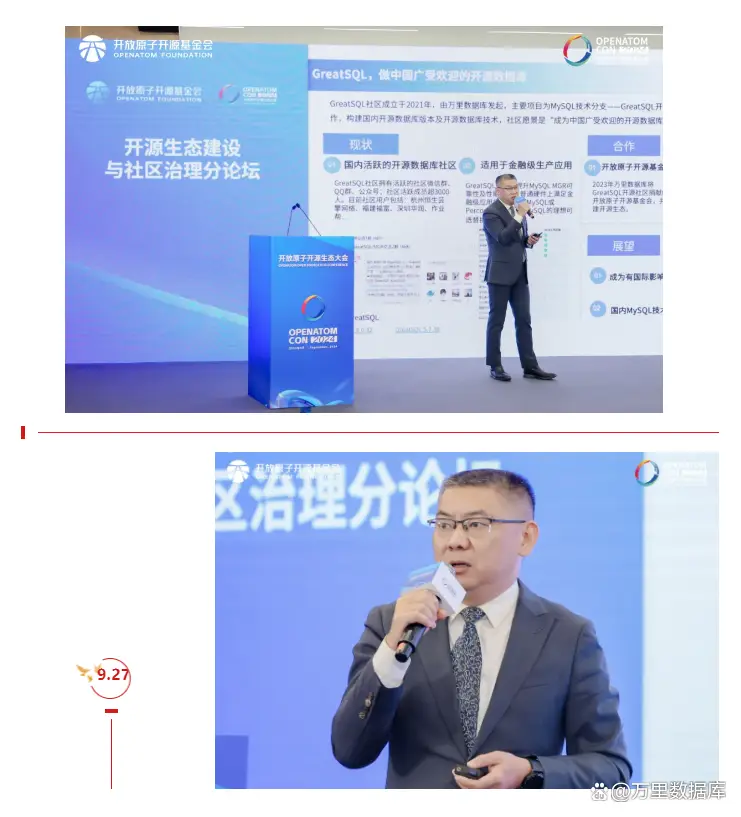
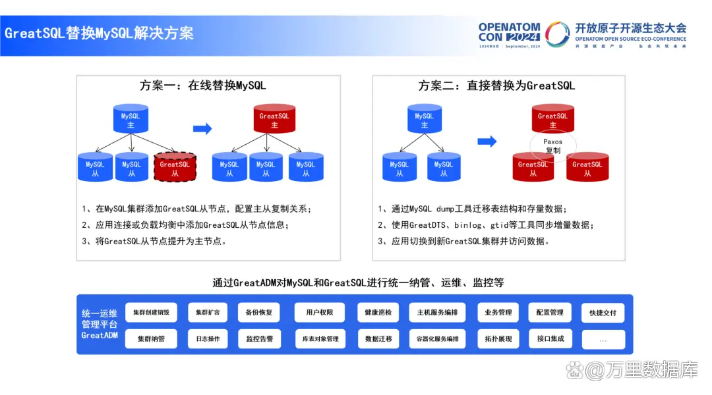
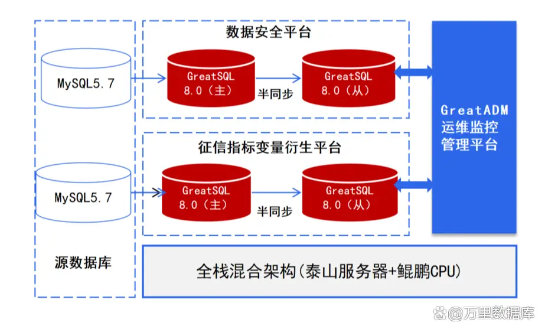
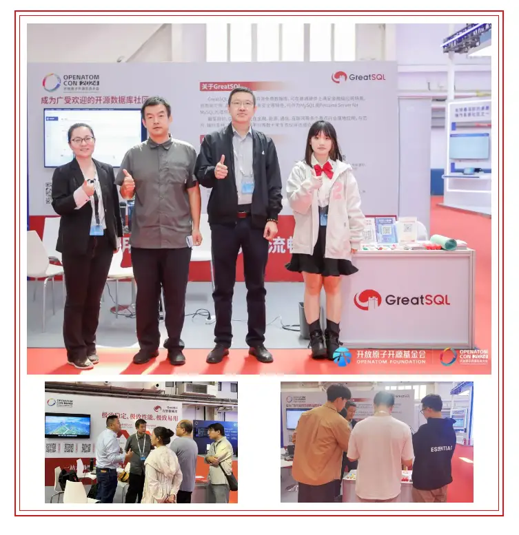

万里数据库+GreatSQL亮相2024开源生态大会 探索开源技术升级
9月25-27日，由开放原子开源基金会主办的2024开放原子开源生态大会在北京举办。本届大会以“开源赋能产业 生态共筑未来”为主题，设有开幕式、开源生态交流区和15场分论坛活动，聚焦地方开源实践、企业开源建设思路，围绕开源生态建设，突出人工智能、云原生等重点领域，探索开源技术促进产业升级，塑造未来开源发展的新蓝图。
工业和信息化部党组书记、部长金壮龙，北京市委副书记、市长殷勇，工业和信息化部总经济师、办公厅主任高东升，北京市政府秘书长曾劲，以及来自产学研用各领域的千余位代表出席大会开幕式。

万里数据库及GreatSQL社区分别作为开放原子开源基金会捐赠单位与孵化期开源项目，一齐受邀亮相本届开源生态大会，在开源生态交流区设置专区咨询交流，并在分论坛上带来主题演讲，锚定开源技术创新，探索数据库新技术升级。
主题演讲——GreatSQL优化提升及金融应用实践
在开源生态建设与社区治理分论坛上，万里数据库售前总监刘永德以《GreatSQL优化提升及金融应用实践》带来主题演讲。
刘永德表示，GreatSQL开源社区成立3年来，主要开源项目GreatSQL开源数据库基于MySQL技术路线，可在普通硬件上满足金融级应用场景，基于Rapid引擎能轻松实现HTAP解决方案，以满足金融行业对高可用性和高性能的严格要求，是MySQL或Percona Server for MySQL的理想替代选择。

GreatSQL开源数据库已被广泛应用于轻量并发、运营商计费/CRM/服务开通、金融缴费/网银/贷款、能源风电监测/农电管理/电费结算、轻量数据量的联机分析应用，如周期性数据汇总报表之类的ERP、财务统计等交易型应用场景和轻量数据分析场景，针对MySQL可提供无缝平滑的迁移替换，并提供常见业务场景下的Oracle数据库替换。

▲GreatSQL替换MySQL解决方案
在金融数字化实践方面，GreatSQL成功支撑了梅州客商银行数据安全平台、征信指标变量衍生平台业务系统平稳上线与运行，并提供数据库本地化服务。GreatSQL的金融级高可用能力再次得到事实验证，保障客户的数据库供应链安全。

▲梅州客商银行-解决方案架构图
此外，GreatSQL开源数据库新增了多项安全特性，包括国密算法支持等，能满足银行数据安全要求，并深度适配国产服务器、芯片、操作系统等上下游生态链，完美适应国产技术生态，满足客户全栈信创要求。
成果展示——开源数据库技术创新 加速应用实践落地
本次大会，万里数据库与GreatSQL社区在开源生态交流区同步设置交流专区，展示数据库最新技术成果及行业应用实践。尤其GreatSQL作为国内知名的开源数据库社区，与OpenHarmony、openEuler、MindSpore等30余个优秀开源项目共同亮相大会。
GreatSQL凭借独特的MySQL技术路线以及基于Rapid引擎实现HTAP解决方案的能力受到现场观众广泛关注。
GreatSQL基于MySQL，在性能、高可用、易用性等方面持续进行技术优化与更新迭代，先后服务梅州客商银行、华润、作业帮、通达信、恒生芸擎等金融、互联网、通讯、能源多个重点行业客户。目前社区拥有约3000名社区注册用户及社群活跃用户、超过20家使用客户及30+家合作伙伴，形成了社区网站、技术课程、培训认证等在内的完整社区运营体系，并先后加入了欧拉、龙蜥、OpenCloudOS等开源社区，着力构建开源领域的上下游产业生态。

数字化浪潮席卷全球的今天，开源作为全球软件技术和产业创新的主导模式，已成为推动技术创新的重要引擎、构建产业生态的关键环节，是实现技术可持续发展的重要保障、提升产业竞争力的重要手段。打造开源生态，不仅要从政策层面发力，更要从产业层面和企业层面入手，推动技术创新，发挥链主企业龙头带动作用，通过开源项目凝聚产业建圈强链的合力。
万里数据库及GreatSQL社区将在未来持续发挥数据库领域及开源生态建设的积极作用，推动开源技术+产业+生态深度融合，在社区持续的更新迭代与运营发展中，适应不断变化的市场需求和技术环境，为产业发展提供有力支撑和持久活力。